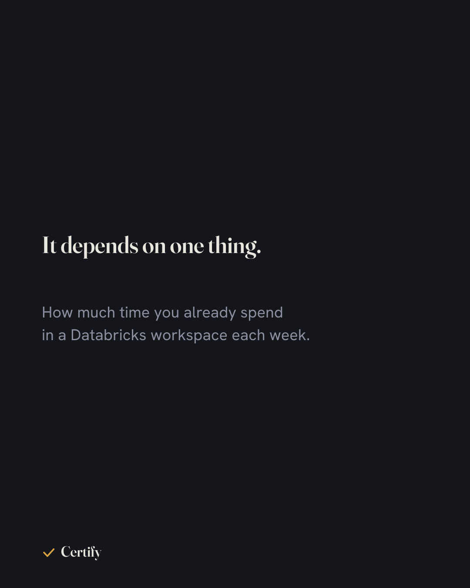
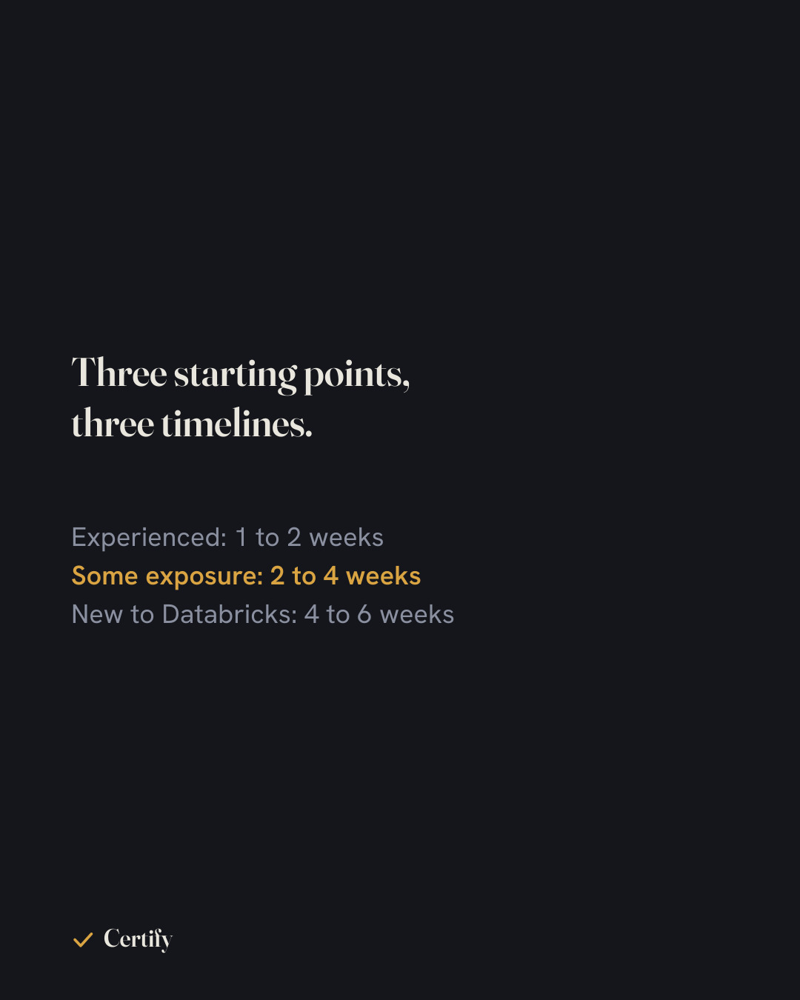
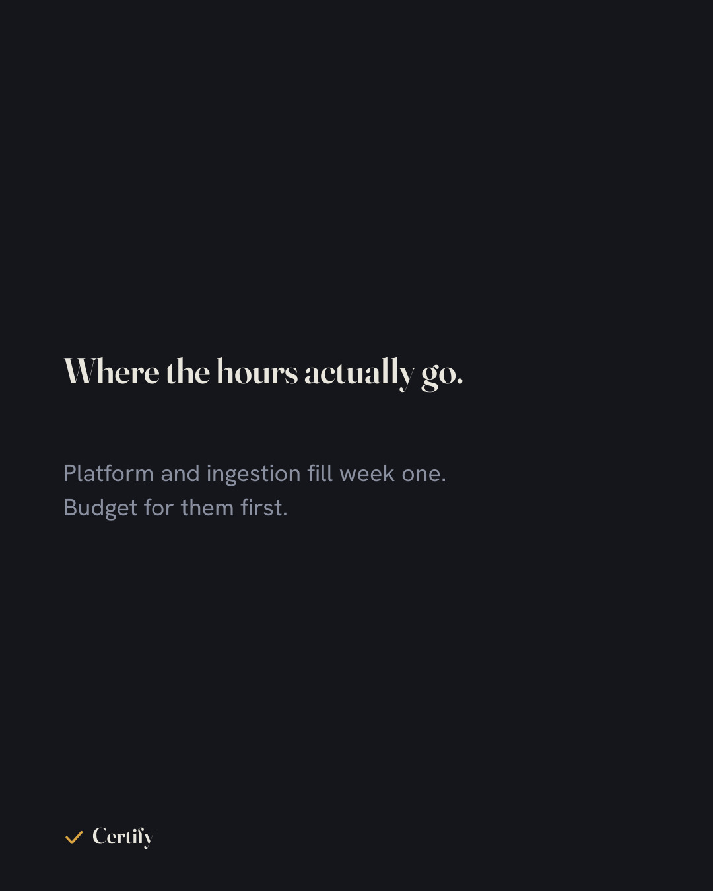
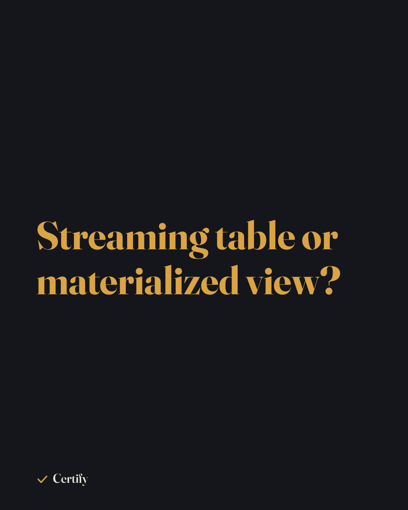
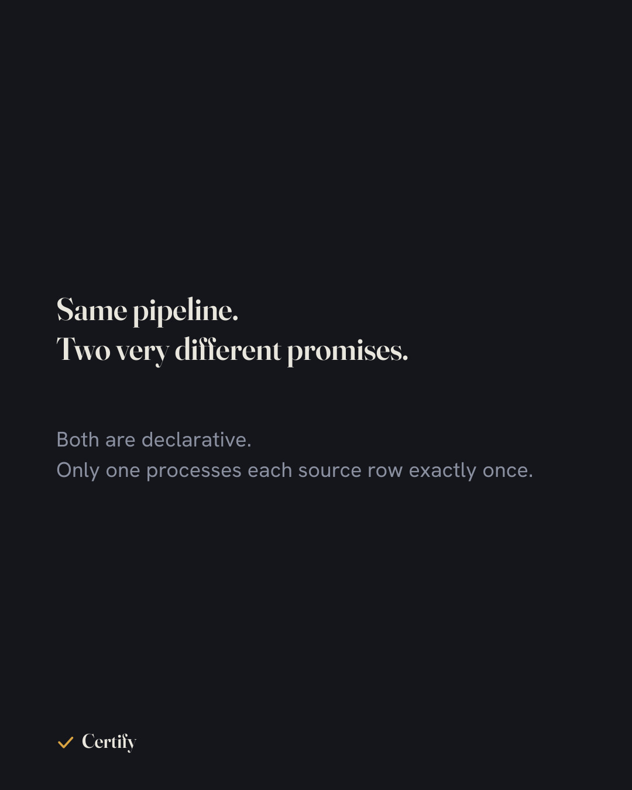
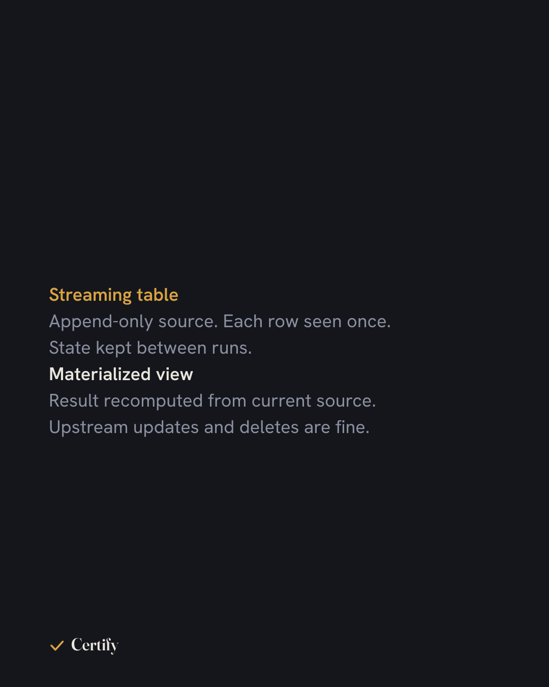
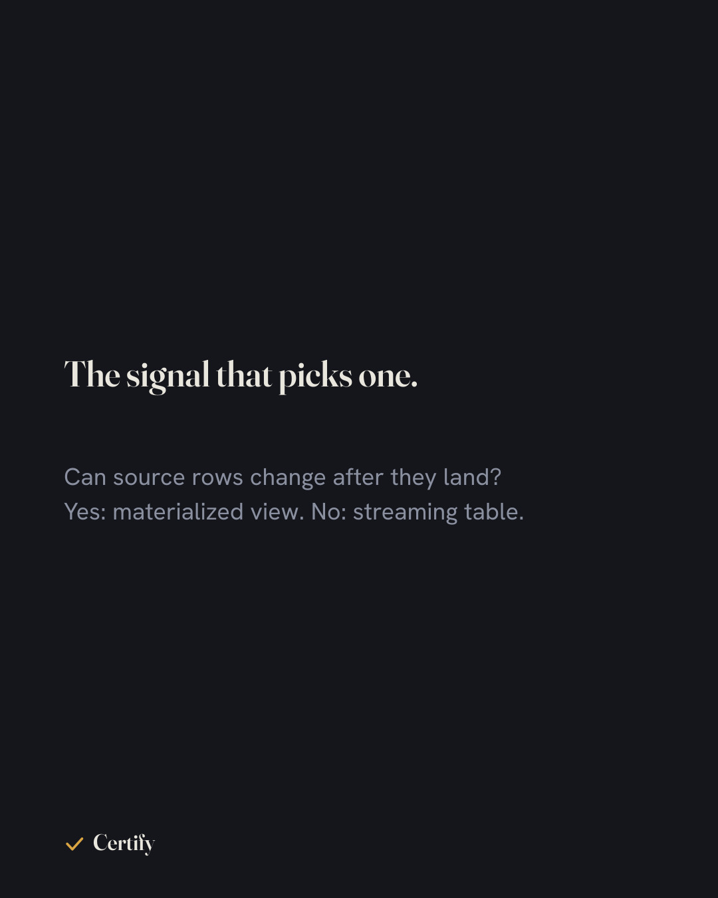

Swipe each rail. Tap Captions for the Instagram and Facebook copy. Draft only, nothing scheduled.



SOURCE: Databricks DE Associate study planning, blog/how-long-to-prepare-databricks-data-engineer-associate.html FORMAT: carousel === INSTAGRAM === How long does it take to prepare for the Databricks Data Engineer Associate exam? The honest answer is a range, not a number, and the range depends on how much of your week already happens inside a Databricks workspace. A daily user is mostly filling gaps. An experienced data engineer who is new to the platform is learning Databricks-specific behaviour on top of concepts they already hold. A career changer is doing both. The full post on certify.courses breaks it down by profile, gives a week-by-week plan mapped to the exam domains, and names the parts that make it take longer than people expect. Every exam fact in it comes from the official exam guide, version May 2026. #databricks #databrickscertification #dataengineer #dataengineering #certification #examprep #lakehouse #deltalake #apachespark #studyplan #datacareers #cloudcertification #certify === FACEBOOK === How long does it take to prepare for the Databricks Data Engineer Associate exam? It depends on how much of your week already happens inside Databricks. Full breakdown by experience level, with a week-by-week plan mapped to the exam domains: https://certify.courses/blog/how-long-to-prepare-databricks-data-engineer-associate #Databricks #DataEngineering #Certification
SOURCE: Databricks GenAI Engineer Associate, databricks-generative-ai-engineer-associate/ (55 lessons, 7 practice exams, all live) FORMAT: single === INSTAGRAM === The Databricks Generative AI Engineer Associate track is complete on certify.courses. 55 lessons, 7 practice exams, built from the official exam guide and the current Databricks documentation, nothing else. Same structure as every other track: one concept per card, a recall check inside each lesson, cross-domain practice exams at the end of each unit. The first unit is free with no account. Try it, then decide. #databricks #generativeai #genai #llm #rag #vectorsearch #mlops #databrickscertification #certification #examprep #aiengineer #datacareers #certify === FACEBOOK === The Databricks Generative AI Engineer Associate track is complete: 55 lessons and 7 practice exams, built only from the official exam guide and current Databricks docs. Unit 1 is free, no account needed. https://certify.courses #Databricks #GenerativeAI #Certification




SOURCE: Databricks DE Professional, Unit 1, Ch 6, obj 1.6 (streaming tables vs materialized views) FORMAT: carousel === INSTAGRAM === In Lakeflow Spark Declarative Pipelines, a streaming table and a materialized view can be defined with almost identical syntax, and they behave nothing alike. A streaming table treats its source as append-only. Each row is processed once and the pipeline keeps state between runs, which is what makes it cheap for high-volume ingestion. A materialized view recomputes its result from the current state of its sources, so it tolerates updates and deletes upstream, and it is the right shape for aggregations and joins over data that can change. The Kafka question: a topic is append-only, so a streaming table. The exam likes to hide the answer in whether the source can mutate, not in what the output looks like. Chapter 6 of the Professional track covers this with the failure modes on both sides. Unit 1 is free on certify.courses. #databricks #lakeflow #streaming #dataengineering #databrickscertification #dataengineer #deltalake #apachespark #kafka #materializedview #certification #examprep #certify === FACEBOOK === Streaming table or materialized view? The deciding question is whether rows in the source can change after they land. Append-only source (a Kafka topic, for example): streaming table. Anything else: materialized view. Chapter 6 of the Databricks Data Engineer Professional track covers both, and Unit 1 is free: https://certify.courses #Databricks #DataEngineering #Certification